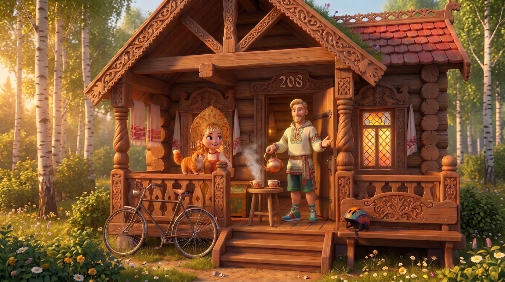
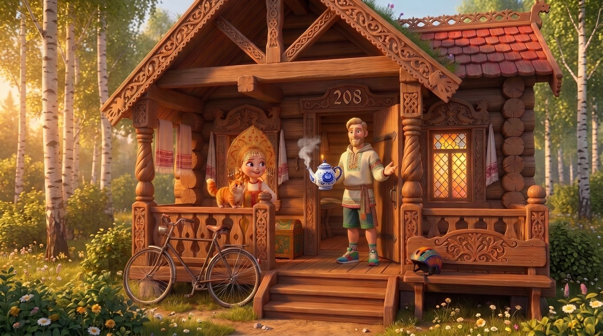

Заставка: надпись старорусским шрифтом
1. Шрифт «Руслан»: вязь, все буквы заглавные
2. Шрифт «Келли»: печатная старина
3. Шрифт «Есева»: книжный, с засечками
Бегущие титры: красный фон
Изба 208: мудрец с чайником, без самовара
4. Расписной глиняный чайник и чашка в руках
5. Медный чайник на столике, наливает чай

6. Чайник под гжель в руках
